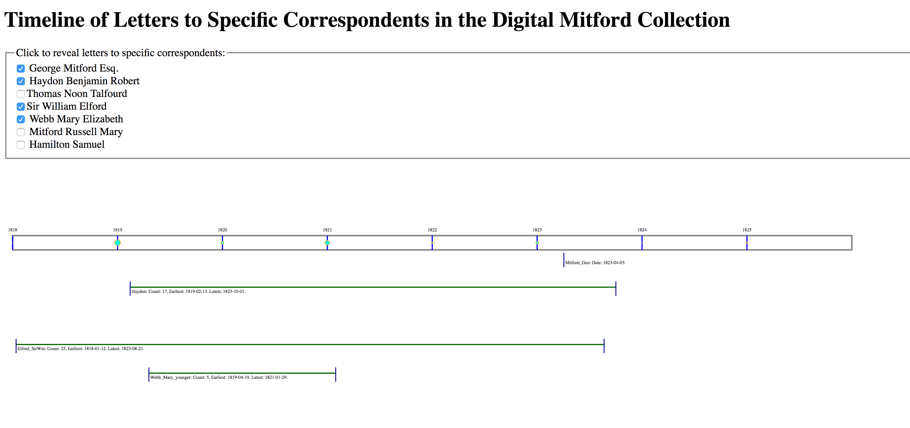

In this exercise, we will enhance our output from SVG Exercises 2 and 3, that is, the timeline we output in SVG from XQuery on the Digital Mitford letters collection stored in our eXist database. At that stage, we output a vertical timeline that ran down the screen and required scrolling, and we plotted a parallel line showing how just one correspondent, Benjamin Robert Haydon, aligned with the total collection timeline. The parallel line marked the earliest and latest letters addressed to him and indicated the stretch of time represented by his letters.
Your task is to timeline to sit on a project webpage as a clickable infographic that helps us to survey the contents of our collection of files. Our sample output looks like this screen capture (but we will refrain from showing you the clickable output until you have completed the assignment):
As shown in the screen capture image, a clicked checkbox shows or hides a line indicating a timespan associated with a particular Mitford correspondent. When a checkbox is clicked, this triggers a JavaScript function to fire to check whether a specific SVG <g> element, is displaying or hidden.
To reconstruct our old SVG output into a dynamic webpage involves some alterations to the original XQuery we wrote, prior to drafting JavaScript. You will need to do the following:
Optimally, we want to generate our HTML page with SVG set within it, so that the same XQuery functions generate the entire page. This is a bit of a challenge for outputting code in multiple namespaces. Here is how we did it:
Note that you can really reverse the default output namespace and make it HTML rather than SVG. That is up to you, but whatever output namespace you choose, the other one must be prefixed in your XQuery script. That means that in our script, every time we indicate an HTML element, we place an htm: prefix in front of it.
Here is the code we used to define the namespaces as global variables at the top of our XQuery script (highlighting the prefix definitions):
xquery version "3.0";
declare default element namespace "http://www.w3.org/2000/svg";
declare namespace tei="http://www.tei-c.org/ns/1.0";
declare namespace htm="http://www.w3.org/1999/xhtml";
dereference(or look up) the first standard full name of each correspondent as listed in the Digital Mitford site index file, which is posted on the web here:
http://digitalmitford.org/si.xml:
declare variable $col := collection ('/db/mitford');
declare variable $letCol := collection ('/db/mitford/letters');
(: other variables here. . . :)
declare variable $letterRecipients := $letFiles/descendant::tei:titleStmt/tei:title/tei:persName/@ref;
declare variable $distLetterRecips := distinct-values($letterRecipients);
declare variable $si := doc('http://digitalmitford.org/si.xml');
Dereferencing isn’t strictly necessary for our assignment, but it is a nice touch for display on the Mitford project’s website, where we can use it in our output HTML to list a full name rather than just an id value as our list of letter correspondents. Consider that a bonus challenge for the assignment: instead of just listing out the @ref values, can you output in the HTML a list of the full names of the letter writers? Hint: In our code, when we wrote a for loop to step through the distinct @ref values, we looked up in the http://digitalmitford.org/si.xml file the first <tei:persName> child of the <tei:person> element whose @xml:id equals the current index variable in the loop.
div type="svg" element (with the namespace prefix if you prefixed HTML: <htm:div type="svg">). You can apply styling to adjust the dimensions of the div, but you can control the dimensions of the SVG viewport so that your timelines will fit on a screen.FLWOR, we found we had to create two for loops over the set of distinct values of correspondents in the collection, one placed near the top of the HTML page, and the other within the SVG portion of the file. Note the following:
<htm:input type="checkbox"> element to generate our checkboxes, and we placed an @id attribute on each one. (To read more about HTML checkbox inputs, see https://developer.mozilla.org/en-US/docs/Web/HTML/Element/input/checkbox ).Our checkbox basically just responds to a mouseclick, and with JavaScript we will make the presence or absence of a check correspond with the display properties of the corresponding SVG line. Note: You do not have to use a checkbox: you could use a htm:button or even an htm:span element that you might stylize in CSS. You simply need for the element to hold an @id attribute that corresponds to each member of your list of distinct values. In order for that @id value to be valid, you will need to remove the hashtag from the front of the string retrieved from the TEI @ref attributes.for loop to output SVG <line> and <text> elements spaced down the page, and we wrap these in an SVG <g>, on which we place an @id attribute. However, we are not allowed to use the same @id value twice on the same document, so we wrote a short string of prefixing text to distinguish one from the other. (We put SVG_ in front of the distinct correspondent value identifying its group of SVG elements, but we could just as easily have put something like HTM_ in front of the @id on the HTML input element.)for loop values. Remember that the minimum year for a correspondent is something we calculate in relation to the minimum (or maximum) year of the whole collection, but then you ALSO need to multiply that value by 365 so it is properly spaced. (You need to do the same thing with the maximum year value.) Once you have done that, you add the day value to the year value.transform="translate()", which we discussed in SVG Exercise 2..html extension. (Interestingly, the prefixes from your XQuery script magically disappear when you open the output file and view its code!)script element signalling your JavaScript file in your XQuery script, in case you need to go back and alter the XQuery to correct your HTML.html root element:
<!DOCTYPE html>
<html xmlns="http://www.w3.org/1999/xhtml">
<oXygen/> should then give you a green light if all is well. Note: if there are hashtags (#) starting your @id attributes, you these will raise an HTML validation error: you want to avoid outputting those.In your JavaScript you will likely be doing some familiar things you have already tried, but you will face new challenges, too. Think about what needs to happen in sequence:
g elements associated with particular correspondent timelines. To toggle the display properties off and on involves writing JavaScript to show or hide a particular line that the user is clicking on, that is, to change the state from hidden to showing. In the CSS we set the default style for the correspondent SVG g elements to display="none", and wrote a JavaScript function to override that and return display="block", which is the proper display value for SVG elements.init(). That init() or initial() function should add event listeners on the HTML elements that you expect your site visitors to interact with. This is familiar territory, but we found ourselves writing the element selection a little differently than we have done in the past: In our SVG, we set @id attributes on each <input> element. We could have just used getElementsByTagName(), but we thought we would show you a handy selector in JavaScript that uses CSS syntax to identify elements that hold a specific attribute called querySelectorAll(): We wrote it like this to define an array of elements:
var inputSelect = document.querySelectorAll('input[id]');
That code creates an array of all the <input> elements that hold an @id attribute. After this we set up a JavaScript for-loop with the range variable i to step through each member of the array of inputSelect.length, and then we set up our addEventListener() to run on the inputSelect[i] (or the svgSelect variable at position i), and to fire the next function in sequence in the event of 'click', just as you have already done on previous assignments.function init().This function needs to check the @id value on the HTML element that was clicked on, and to refer to that element, the one the user has just now clicked on, we use the special JavaScript word this. To find the @id on this, we write: this.id. What you need to do with this.id is use it to find the corresponding SVG element whose @id best matches. In our code, we added the string SVG_, so we sought out the element with the id 'SVG_' + this.id to find the matching group of SVG elements associated with a particular selected correspondent.if() else() to change the display property of the matching SVG element. Remember that to check the display condition of this, we need to use the double equal sign: ==, and use the single equal sign = to indicate a change in value.You will need to submit multiple files to complete this assignment:
We ask that you associate your files with relative URLs so that you can upload them to Courseweb or put them in place (in relation to each other) on whatever web server you wish to use. Submit this on Courseweb, but if you like, you may also mount your files on your newtFire or GitHub io webspace.